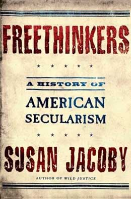

|

Freethinkers
A history of American secularism
- - - - - - - - - -
by Susan Jacoby
 O DESCRIBE the last quarter of the nineteenth and the first decade of the twentieth centuries as a golden age of freethought is to suggest not that a majority of Americans were persuaded by rationalist or antireligious arguments but that those arguments reached a much broader public than they ever had in the past. Unlike eighteenth-century deists, nearly all of whom identified with Jeffersonian democracy, American freethinkers of the late nineteenth century were anything but unified in their political views, which ran the gamut from anarchism to Spencerian conservatism. Freethinkers might be Democrats, rock-ribbed Republicans, or, on occasion, socialists with either a capital or a small s. O DESCRIBE the last quarter of the nineteenth and the first decade of the twentieth centuries as a golden age of freethought is to suggest not that a majority of Americans were persuaded by rationalist or antireligious arguments but that those arguments reached a much broader public than they ever had in the past. Unlike eighteenth-century deists, nearly all of whom identified with Jeffersonian democracy, American freethinkers of the late nineteenth century were anything but unified in their political views, which ran the gamut from anarchism to Spencerian conservatism. Freethinkers might be Democrats, rock-ribbed Republicans, or, on occasion, socialists with either a capital or a small s.
The one political concern that did unite all freethinkers was their support for absolute separation of church and state, which translated into opposition to any tax support of religious institutions-especially parochial schools. For the most part, tax support of religious schools had been a nonissue on a national basis before the Civil War-although New York City's Catholic leadership had pushed unsuccessfully in the 1840s for government subsidy, long established in many European countries, of religious education. By the 1870s, when the growth of the older Irish Catholic community and new immigration from the Catholic countries of Europe began to transform the ethnic and religious makeup of most large cities, the financing of parochial school education became a divisive issue throughout the country.
Nineteenth-century opposition to tax subsidies for parochial schools is often portrayed by modern supporters of religious school vouchers as a manifestation of singleminded anti-Catholicism, but that was certainly not true for freethinkers. Deists of Jefferson's generation fought tax support for religious institutions at a time when the only influential American religious sects were Protestant. Their nineteenth-century successors were unquestionably appalled when the Roman Catholic Church became the first large religious denomination to establish its own school system in America, and they viewed the growth of Catholic schools as a threat to the expansion of public education-a major goal of all social reformers after the Civil War. In addition, Pius IX's well-publicized denunciations of religious pluralism, secular government, modernism, and science reinforced long-standing American suspicions, on the part of devout Protestants as well as freethinkers, of "papists." But freethinkers, secularists, rationalists, infidels, agnostics, and atheists, whatever they call themselves or are called by others-have always taken the position that the American government has no business spending any money on any institution whose purpose is the promotion of any religion.
Because Americans of different faiths were accustomed to religious liberty in practice as well as in theory, separation of church and state-however compelling as a constitutional principle-was not an issue that touched the daily lives of most citizens. Arguments over the mention of God on coins or tax exemption of church property could not provide freethinkers with a basis for appeal to the larger public. The absence of a political focus-a problem unknown to anticlerical Europeans, who formed a political opposition to governments based on monarchy, narrow economic privilege, and church authority-is generally considered a weakness of the American freethought movement. But this lack of identification with a particular political point of view or party was also a strength, in that it enabled freethinkers to exert a strong influence on other reform movements that were nonpartisan in character. For if freethinkers did not have a political platform, they nevertheless agreed on a wide range of social, cultural, and artistic concerns, which generated such fierce debate in the decades after the Civil War that they would form a template for the nation's "culture wars" a century later. These included free political speech; freedom of artistic expression; expanded legal and economic rights for women that went well beyond the narrow political goal of suffrage; the necessity of ending domestic violence against women and children; dissemination of birth control information (a major target of the punitive postal laws, defining birth control information as obscene, that bore the name of Anthony Comstock); opposition to capital punishment and to inhumane conditions in prisons and insane asylums; and, above all, the expansion of public education.
American secularists were dedicated to the improvement of free cultural and educational institutions for pragmatic as well as philosophical reasons. The unprecedented postwar expansion of public schools, libraries, and museums-the latter two supported by private philanthropists as well as public funds-contributed greatly to the willingness of Americans to entertain, if not necessarily to adopt, unfamiliar ideas. Free public education for the many rather than the few was essential to the secularist vision of a society in which every individual, unhampered by gatekeepers who sought to control the spread of dangerous knowledge, could go as far as his or her intellect would permit. In the view of freethinkers, the most pernicious gatekeepers were religious authorities; thus, education must be both secular and publicly financed. Indeed, by the 1870s the word secularist was used not only as a general philosophical term but as a specific definition, in either the affirmative or the pejorative sense, of those who advocated public schooling free of religious content.
 REETHOUGHT PERIODICALS, which proliferated after the Civil War, were important sources of communication within the freethinking community. They included the venerable Boston Investigator, dating from 1831; the Truth Seeker, founded in 1873 in Peoria, Illinois, but soon relocated to New York City; the Blue Grass Blade in Lexington, Kentucky; the Free-Thought Ideal and Free-Thought Vindicator in Ottawa, Kansas; the irresistibly titled Lucifer, the Light-Bearer in Topeka, Kansas; and the Iconoclast in Austin, Texas, whose editor, William Cowper Brann, was shot in the back and killed by an enraged Baptist in 1898. Brann is an unusual figure in the annals of American freethought, because he was a militant racist-a stance that made him a pariah within the national freethought movement (though many northern freethinkers, like others in the North, saw racism as a strictly southern phenomenon). REETHOUGHT PERIODICALS, which proliferated after the Civil War, were important sources of communication within the freethinking community. They included the venerable Boston Investigator, dating from 1831; the Truth Seeker, founded in 1873 in Peoria, Illinois, but soon relocated to New York City; the Blue Grass Blade in Lexington, Kentucky; the Free-Thought Ideal and Free-Thought Vindicator in Ottawa, Kansas; the irresistibly titled Lucifer, the Light-Bearer in Topeka, Kansas; and the Iconoclast in Austin, Texas, whose editor, William Cowper Brann, was shot in the back and killed by an enraged Baptist in 1898. Brann is an unusual figure in the annals of American freethought, because he was a militant racist-a stance that made him a pariah within the national freethought movement (though many northern freethinkers, like others in the North, saw racism as a strictly southern phenomenon).
The most influential freethought publication--the only one with a truly national circulation--was the Truth Seeker. On the masthead of the first issue, published on September i, 1873, editor D. M. Bennett and his wife, Mary, proclaimed that the publication would devote itself to "science, morals, free thought, free discussions, liberalism, sexual equality, labor reform, progression, free education, and whatever tends to elevate and emancipate the human race." Its lively letters to the editor column provided a forum not only for readers in large cities with established freethought organizations but for "village atheists" in small towns, particularly in the South, where religious unorthodoxy could lead to social ostracism or worse (as Brann's shooting demonstrated). The writers and editors of the nineteenth-century Truth Seeker were an eclectic bunch. They included proponents of sexual abstinence and free love, urban sophisticates and devotees of pure country air, spiritualists and uncompromising rationalists, temperance campaigners and promoters of a European appreciation of wine (the latter was perhaps an inheritance from the old association between freethought and revolutionary France), and health nuts of every ilk. In 1929, George Macdonald recalled that there "has always been a considerable fringe of ascetics in the Freethought ranks--foes of rum, tobacco, corsets, sex, meat, and white bread.... Their slogan is: 'The whiter the bread the sooner you're dead.'" This quirkiness and diversity of interests was reflected in the freethought press, with opposition to organized religion and devotion to separation of church and state as the two unifying themes.
But the freethought lecture circuit--not the press--was the chief mode of communication between committed agnostics and a larger public that was interested in but did not define itself by religious skepticism. Americans flocked to lectures in every area of the country--whether in great cities where well-off inhabitants could afford to pay the munificent sum of one dollar for a ticket to a lecture by the famous [Robert Green] Ingersoll (scalpers in New York City, the newspapers reported disapprovingly, got up to two dollars) or in towns like Dowagiac, where a citizen might spend a nickel to hear a traveling lecturer at the Universalist Church, the established venue for heretical talks. General circulation newspapers treated the talks--especially the more controversial ones--as legitimate news events. Ingersoll, Stanton, and Anthony made headlines and sold newspapers wherever they went. When Anthony spoke at the Dowagiac Universalists' invitation in 1874 (two decades before she was enshrined in the Beckwith Theater's dissident pantheon), the church was packed even though the one local newspaper described her arguments as "lengthy but not particularly convincing... and [eliciting] but little enthusiasm." Not little enough, the writer was forced to admit, because when Anthony asked her local audience for a show of hands on the woman suffrage issue, "the ladies" surprised the men by responding with an uppity and overwhelming "aye."
It is difficult, in an era in which most Americans acquire their information from packaged sound bites that require almost no effort from audiences, to convey the excitement of a time when people were willing to expend a good deal of energy looking at evidence, and listening to opinions, that challenged the received wisdom of previous ages. Autodidacts considered it fun to sit or stand for hours and hear lecturers discuss Shakespeare's sonnets, the poetry of Byron, the philosophy of Voltaire, the new biblical criticism based on the premise that the Scriptures were written by humans, evolution, electrification, the germ theory of disease, or woman suffrage. Their faith-inspired counterparts were equally eager to listen to evangelists deliver lengthy sermons on salvation and damnation. Freethought lecturers, unable to hold out the prospect of salvation or threaten damnation in the next world, could appeal to their audiences only by holding out a different vision of how to think and live on this earth.
Excerpted from Freethinkers: A History of American Secularism

|